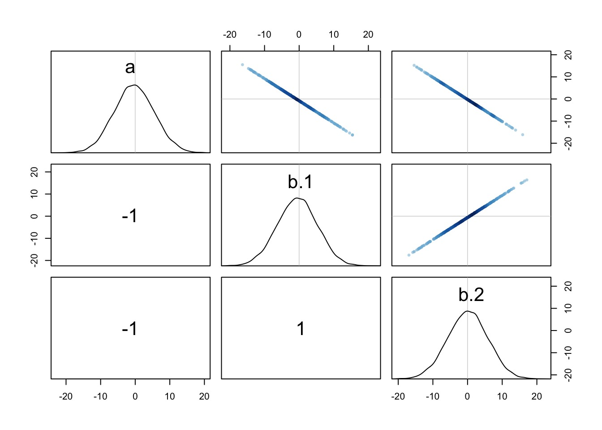
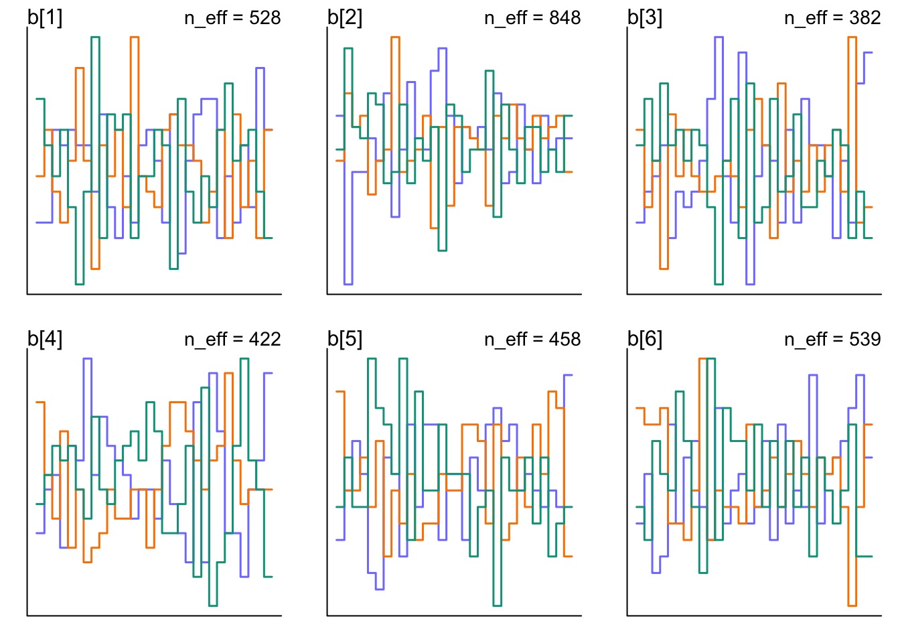
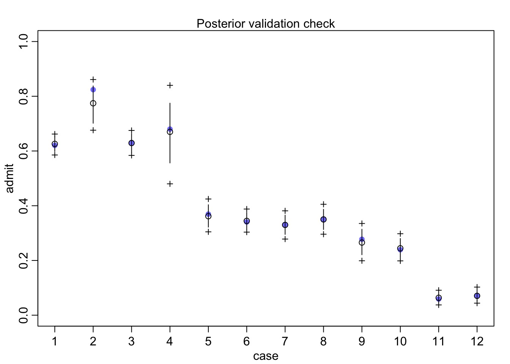
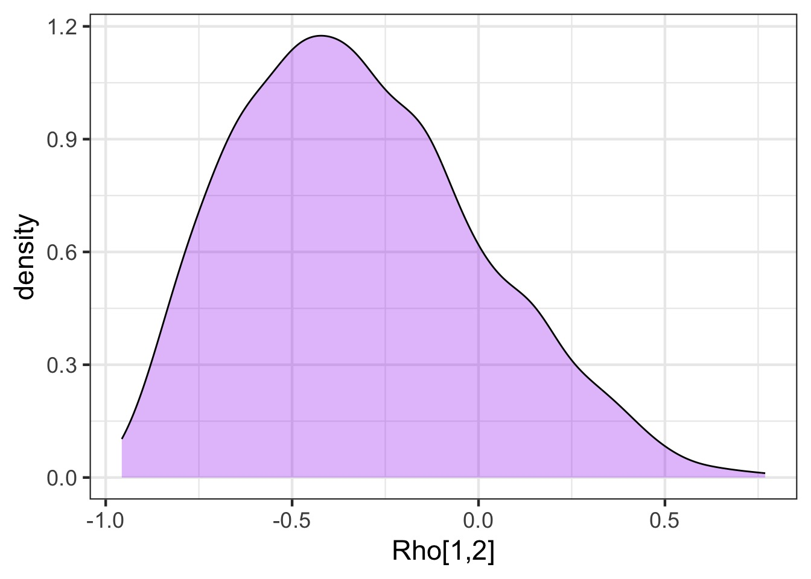
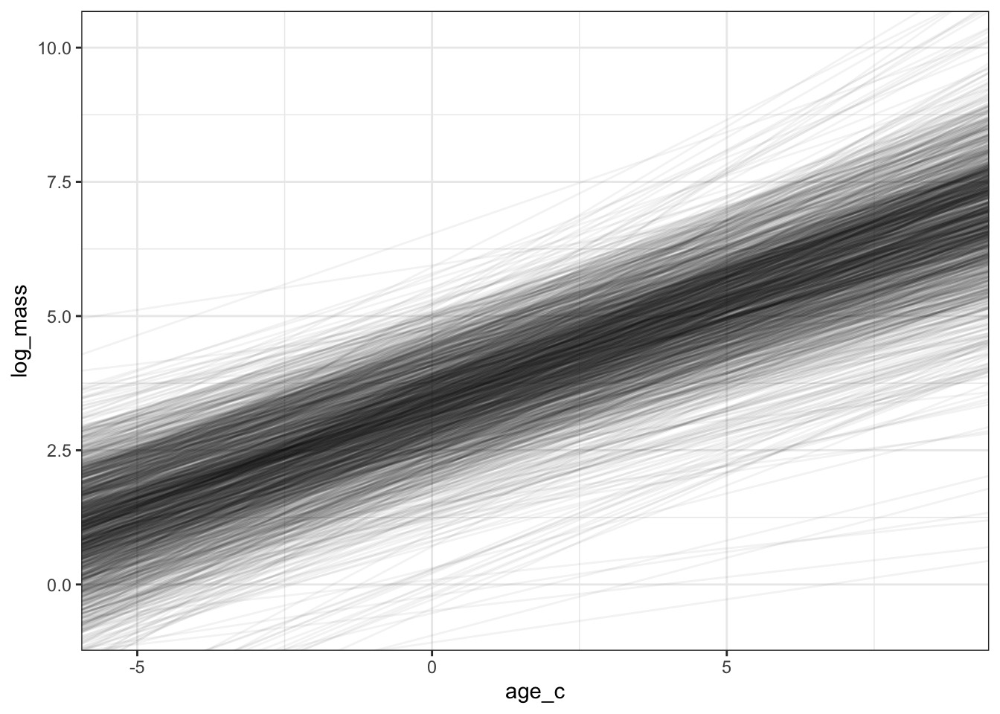

Varying Slopes in Bayesian Mixed (aka Hierarchical, aka Multilevel) Models

Gender Discrimination in Graduate Admissions

Our data: Berkeley
dept applicant.gender admit reject applications
1 A male 512 313 825
2 A female 89 19 108
3 B male 353 207 560
4 B female 17 8 25
5 C male 120 205 325
6 C female 202 391 593A Poor First Model
#Make a dept and genderindex
UCBadmit$gender <- as.numeric(UCBadmit$applicant.gender)
UCBadmit$dept_id <- as.numeric(UCBadmit$dept)
mod_gender_bad <- alist(
#likelihood
admit ~ dbinom(applications, p),
#Data generating process
logit(p) <- a + b[gender],
#priors
a ~ dnorm(0,10),
b[gender] ~ dnorm(0,10)
)
fit_gender_bad <- quap(mod_gender_bad, UCBadmit)How does it look?

What is the model we want?
- Random effect of departent
- Recall a fixed effect of department fit much better
- Recall a fixed effect of department fit much better
- AND the gender effect might vary by department
- In fixed effects, this would be dept*gender
- In mixed models, effect of gender varies by department
What about this?
\(a_{dept} \sim dnorm(\hat{a}, \sigma_{a})\)\(b_{dept} \sim dnorm(\hat{b}, \sigma_{b})\)
Notice how Slope and Intercept covary

Notice how Slope and Intercept covary

Dealing with Slope-Intercept Covariance
So, if we want… \[logit(p_i) = a_{dept} + b_{dept} gender_i\]Then, \(a_{dept}\) and \(b_{dept}\) must covary
\[\begin{bmatrix} a_{dept} \\ b_{dept} \end{bmatrix} \sim MVNormal \left (\begin{bmatrix} \widehat{a} \\ \widehat{b} \end{bmatrix}, \textbf{S} \right )\]
Building a Covariance Matrix with Correlations
- A covariance matrix is fine, but we often want to
know correlation
- Often harder to parameterize a covariance matrix
conceptually
- Fortunately, covab =
corabsdasdb
\[S_{ab} = \begin{bmatrix} \sigma_a & 0\\ 0 & \sigma_b \end{bmatrix} \begin{bmatrix} 1& r_{ab}\\ r_{ab} & 1 \end{bmatrix} \begin{bmatrix} \sigma_a & 0\\ 0 & \sigma_b \end{bmatrix}\]Priors and Correlations
- We know about how to make \(\sigma\) priors with
dcauchy
- What about correlations?
- Introducting, the LKJ Correlation
Distribution!
-Evaluates probability of correlation matrices
-Parameter \(\eta\) says how peaked it is towards 0
LKJ Correlation Distribution

So, those random effects…
\[\begin{bmatrix} a_{dept} \\ b_{dept} \end{bmatrix} \sim MVNormal \left (\begin{bmatrix} \widehat{a} \\ \widehat{b} \end{bmatrix}, \mathbf{ \sigma } \textbf{R} \mathbf{ \sigma } \right )\]
A Variable Slope Intercept Model
UCBadmit$isMale <- as.numeric(UCBadmit$applicant.gender)-1 mod_gender_dept_mixed <- alist( #likelihood admit ~ dbinom(applications, p), #Data generating process logit(p) <- a_hat + a[dept_id] + b_hat*isMale + b[dept_id]*isMale, # RE c(a,b)[dept_id] ~ multi_normal(c(0,0), Rho, sigma_dept), #priors a_hat ~ dnorm(0,10), b_hat ~ dnorm(0,10), sigma_dept ~ dexp(2), Rho ~ dlkjcorr(2) )What is new
Our definition of random effects:
c(a,b)[dept_id] ~ dmvnorm2(c(0,0),
sigma_dept, Rho)
sigma_deptknows there are 2 values:
sigma_dept ~ dexp(2)
Our Correlation Prior:
Rho ~ dlkjcorr(2)Fitting
Did it blend?

Did it blend?

Did it blend?

Posterior Check

How correlated were slope and intercept?
gender_samp <- tidy_draws(fit_gender_dept_mixed) ggplot(data = gender_samp, aes(x = `Rho[1,2]`)) + geom_density(fill = "purple", alpha = 0.3)[1] "lp__" "b[1]" "b[2]" "b[3]" [5] "b[4]" "b[5]" "b[6]" "a[1]" [9] "a[2]" "a[3]" "a[4]" "a[5]" [13] "a[6]" "a_hat" "b_hat" "sigma_dept[1]" [17] "sigma_dept[2]" "Rho[1,1]" "Rho[2,1]" "Rho[1,2]" [21] "Rho[2,2]" "treedepth__" "divergent__" "energy__" [25] "accept_stat__" "stepsize__" "n_leapfrog__" ".chain" [29] ".iteration" ".draw"How correlated were slope and intercept?

How correlated were slope and intercept?

How important was incorporating a random slope?
- Can look at density of \(\sigma\)
for slope and intercept
- Can fit variable intercept only model and compare with WAIC
- And no reason you can’t use ensemble predictions if both are valid
hypotheses
- And no reason you can’t use ensemble predictions if both are valid
hypotheses
Density of Sigmas
Variable Intercept Only Model
mod_gender_dept_varint <- alist( #likelihood admit ~ dbinom(applications, p), #Data generating process logit(p) <- a_hat + a[dept_id] + b_hat*isMale, a[dept_id] ~ dnorm(0, sigma_dept), #priors a_hat ~ dnorm(0,10), b_hat ~ dnorm(0,10), sigma_dept ~ dexp(2) ) fit_gender_dept_varint<- ulam(mod_gender_dept_varint, data = UCBadmit |> select(isMale, dept_id, admit, applications), chains=3)Not quite as good of a fit…
(I assume we’ve checked the chains…)
WAIC suggests Variable Slope model better…
But big SE - what would you do?
Optimization and Alternate Parameterization
- How we build our golem in part of the model itself
- We have seen even with centering that we can improve fit/speed
- With big multivariate normal densities, Non-centered parameterization can help
Non-Centered Parameterization
Consider
\[ y \sim Normal(\mu, \sigma)\]
This can be re-written as:
\[y = \mu + z \sigma\] \[ z \sim Normal(0,1)\]
Fitting N(0,1) and estimating \(\mu\) and \(z\) is much more efficient
Implications of Non-Centered Parameterization with Mixed Models
- NC Paramterization implies that if we pull out sigmas and
coefficients, we’re left with mean 0 and a correlation matrix
- Correlations of the priors can be further removed with
Cholesky decomposition of the correlation matrix
- Thus, we can often sample more efficiently
- Rethinking does this for you under the hood with
dmvnormNC- Assumes random effects are centered on 0
NC Paramterized Model
mod_gender_dept_nc <- alist( #likelihood admit ~ dbinom(applications, p), #Data generating process logit(p) <- a_hat + re_dept[dept_id,1] + b_hat*isMale + re_dept[dept_id,2]*isMale, # NCP RE transpars > matrix[6, 2]:re_dept <- compose_noncentered(sigma_dept, Rho_dept, z_dept), #priors a_hat ~ dnorm(0,10), b_hat ~ dnorm(0,10), # NCP priors matrix[2,6]:z_dept ~ normal( 0 , 1 ), vector[2]:sigma_dept ~ dexp(2), cholesky_factor_corr[2]:Rho_dept ~ lkj_corr_cholesky( 2 ), # convert Cholesky to Corr matrix gq> matrix[2,2]:Rho <<- Chol_to_Corr(Rho_dept) )What is going on in this model matrices
#Data generating process logit(p) <- a_hat + re_dept[dept_id,1] + b_hat*isMale + re_dept[dept_id,2]*isMale,- We are using a matrix of random effects.
- Can be efficient for large amounts of REs
Our NCP RE Matrix
# NCP RE transpars > matrix[6, 2]:re_dept <- compose_noncentered(sigma_dept, Rho_dept, z_dept),transpars >says we are creating transformed parameters.
- note we define a 6 x 2 matrix of REs - intercepts (col 1) and slopes
(col 2).
z_deptis now a z-scored hyperprior for our REs
Our Z-Scored Hyperprior
# NCP priors matrix[2,6]:z_dept ~ normal( 0 , 1 ),- note the matrix is transposed
- but, every element is N(0,1)
Our Hyperprior for Departmental Variances
vector[2]:sigma_dept ~ dexp(2),- we declare a vector of sigmas for intercept and slope
- but otherwise as before
Our Correlation Matrix
cholesky_factor_corr[2]:Rho_dept ~ lkj_corr_cholesky( 2 ), # convert Cholesky to Corr matrix gq> matrix[2,2]:Rho <<- Chol_to_Corr(Rho_dept)- We have an object type specific to Cholesky decomposition -
cholesky_factor_corr
- Also a new distribution for the decomposition
lkj_corr_cholesky
gq>means generated quantity - so, something derived from your sampled parameters
- Here we convert our Cholesky decomposed matrix to a true correlation matrix
And let’s fit!
How is Z Mixing?
But how are our REs Mixing?
More transpars for easier comparison
mod_gender_dept_nc <- alist( #likelihood admit ~ dbinom(applications, p), #Data generating process logit(p) <- a_hat + a[dept_id] + b_hat*isMale + b[dept_id]*isMale, # NCP RE transpars > vector[6]:a <<- re_dept[,1], transpars > vector[6]:b <<- re_dept[,2], transpars > matrix[6, 2]:re_dept <- compose_noncentered(sigma_dept, Rho_dept, z_dept), #priors a_hat ~ dnorm(0,10), b_hat ~ dnorm(0,10), # NCP priors matrix[2,6]:z_dept ~ normal( 0 , 1 ), vector[2]:sigma_dept ~ dexp(2), cholesky_factor_corr[2]:Rho_dept ~ lkj_corr_cholesky( 2 ), # convert Cholesky to Corr matrix gq> matrix[2,2]:Rho <<- Chol_to_Corr(Rho_dept) )Are they different?

Are they different?
NCmean sd 5.5% 94.5% rhat ess_bulk b[1] -0.55390227 0.2942779 -1.03078600 -0.1178819 1.004485 844.8861 b[2] -0.03935680 0.3068819 -0.50585594 0.4384510 1.001113 1095.9337 b[3] 0.24361848 0.2339808 -0.07225857 0.6379051 1.002734 674.7744 b[4] 0.07993483 0.2299250 -0.25628297 0.4473322 1.004246 646.0574 b[5] 0.28029734 0.2534287 -0.07537584 0.6841122 1.001586 824.2421 b[6] 0.06005412 0.2772689 -0.37816329 0.5132305 1.001427 1107.7910Standardmean sd 5.5% 94.5% rhat ess_bulk b[1] -0.57294559 0.3108684 -1.0762455 -0.1180378 1.002917 527.9177 b[2] -0.03393095 0.3227156 -0.5333867 0.4788650 1.000409 847.7560 b[3] 0.23581446 0.2536752 -0.1085711 0.6578231 1.001227 382.4475 b[4] 0.07157166 0.2518730 -0.2846817 0.4912321 1.001193 422.2788 b[5] 0.27099108 0.2730831 -0.1201936 0.7649616 1.002690 457.6668 b[6] 0.04700444 0.3192950 -0.4387460 0.5800213 1.002322 539.3690Visualizing Random Effects
- Viz of models with varying effects is tricky
- WHAT IS YOUR QUESTION?
- We often want only averages
- But, we might want to incorporate our REs for future prediction
Dinosaur Allometry!
First, a model!
Likelihood: \(log\ mass_i \sim N(\mu_i, \sigma)\)
DGP: \(\mu_i = \bar{a} + a_{species} + \bar{b} age\ centered_i + b_{species} age\ centered_i\)
RE: \([a_{species}, b_{species}] \sim MVN([0,0], R, [\sigma_a, \sigma_b])\)Code it
Code it for 6 Species
dino_mod <- alist( # Likelihood log_mass ~ dnorm(mu, sigma), # DGP mu <- a_bar + a[sp_id] + b_bar * age_c + b[sp_id]* age_c, # Varying Effects using NCP transpars > vector[6]:a <<- re_mat[,1], transpars > vector[6]:b <<- re_mat[,2], transpars > matrix[6, 2]:re_mat <- compose_noncentered(sigma_re, Rho_chol, z), #priors a_bar ~ dnorm(0,2), b_bar ~ dnorm(0,2), sigma ~ dexp(2), # NCP Priors for Varying Effects matrix[2,6]:z ~ normal( 0 , 1 ), vector[2]:sigma_re ~ dexp(2), cholesky_factor_corr[2]:Rho_chol ~ lkj_corr_cholesky( 2 ), # convert Cholesky to Corr matrix gq> matrix[2,2]:Rho <<- Chol_to_Corr(Rho_chol) )Fit!
How did it do?
How did it do?
Coefficients and Predictions for Individual Species
The Average Fit with Coefficient Uncertainty Only

With Each Species
Or Credible Interval
Or Credible Interval
With Each Species
But What About New Species?
new_sp <- dino_coefs |> select(.draw, a_bar, b_bar, `sigma_re[1]`, `sigma_re[2]`, `Rho[1,2]`) |> group_by(.draw) |> reframe(re = rmvnorm2(1, sigma = c(`sigma_re[1]`, `sigma_re[2]`), Rho = matrix(c(1, `Rho[1,2]`, `Rho[1,2]`, 1), ncol = 2)), a_bar = a_bar, b_bar = b_bar) |> mutate(intercept = re[,1] + a_bar, slope = re[,2] + b_bar, )But What About New Species?
Or Show with Credibility
- We know about how to make \(\sigma\) priors with